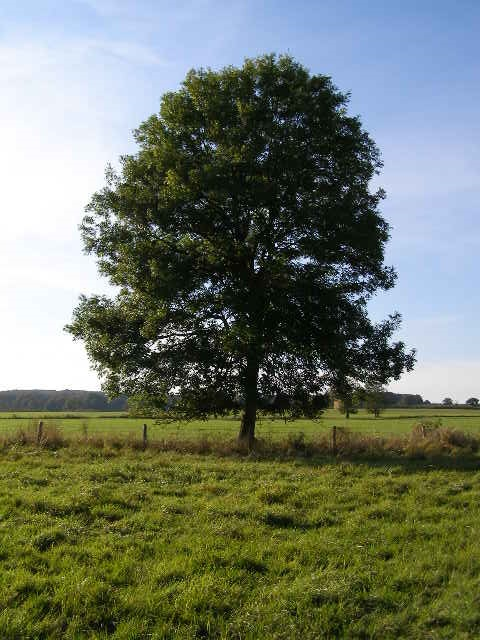

3 Catalogue of visualization kinds
(ns kinds
(:require [scicloj.kindly.v4.api :as kindly]
[scicloj.kindly.v4.kind :as kind]
[tablecloth.api :as tc]))3.1 Plain values
Values with no kind are displayed the default way each tool would display them. In Clay, they are simply pretty-printed.
(+ 4 5)9(str "abcd" "efgh")"abcdefgh"3.2 Plain data structures
By default (according to kindly/advice), plain Clojure data structures: vectors, other sequentials (lists/seqs/ranges/etc.), sets, and maps, are assigned the kinds kind/vector, kind/seq, , kind/set, and kind/map, respectively.
Each tool may have its own way to display these kinds. For example, Clay just uses text, while Portal has a hierarchical navigation UI.
(list 1 "A" :B 'C)(1 "A" :B C)(range 9)(0 1 2 3 4 5 6 7 8)[1 "A" :B 'C][1 "A" :B C]#{1 "A" :B 'C}#{1 :B C "A"}{1 "A" :B 'C}{1 "A", :B C}More examples:
(def people-as-maps
(->> (range 29)
(mapv (fn [i]
{:preferred-language (["clojure" "clojurescript" "babashka"]
(rand-int 3))
:age (rand-int 100)}))))people-as-maps[{:preferred-language "babashka", :age 86}
{:preferred-language "clojure", :age 69}
{:preferred-language "babashka", :age 96}
{:preferred-language "babashka", :age 19}
{:preferred-language "clojure", :age 29}
{:preferred-language "clojurescript", :age 59}
{:preferred-language "clojurescript", :age 66}
{:preferred-language "clojurescript", :age 85}
{:preferred-language "clojurescript", :age 36}
{:preferred-language "clojurescript", :age 71}
{:preferred-language "clojurescript", :age 20}
{:preferred-language "babashka", :age 61}
{:preferred-language "clojurescript", :age 12}
{:preferred-language "clojure", :age 49}
{:preferred-language "babashka", :age 93}
{:preferred-language "clojure", :age 24}
{:preferred-language "babashka", :age 97}
{:preferred-language "clojurescript", :age 94}
{:preferred-language "babashka", :age 25}
{:preferred-language "babashka", :age 74}
{:preferred-language "babashka", :age 66}
{:preferred-language "clojure", :age 41}
{:preferred-language "clojurescript", :age 29}
{:preferred-language "clojurescript", :age 29}
{:preferred-language "clojurescript", :age 98}
{:preferred-language "clojurescript", :age 15}
{:preferred-language "babashka", :age 38}
{:preferred-language "clojure", :age 8}
{:preferred-language "babashka", :age 61}](def people-as-vectors
(->> people-as-maps
(mapv (juxt :preferred-language :age))))people-as-vectors[["babashka" 86]
["clojure" 69]
["babashka" 96]
["babashka" 19]
["clojure" 29]
["clojurescript" 59]
["clojurescript" 66]
["clojurescript" 85]
["clojurescript" 36]
["clojurescript" 71]
["clojurescript" 20]
["babashka" 61]
["clojurescript" 12]
["clojure" 49]
["babashka" 93]
["clojure" 24]
["babashka" 97]
["clojurescript" 94]
["babashka" 25]
["babashka" 74]
["babashka" 66]
["clojure" 41]
["clojurescript" 29]
["clojurescript" 29]
["clojurescript" 98]
["clojurescript" 15]
["babashka" 38]
["clojure" 8]
["babashka" 61]]These kinds have recursive kind semantics: if the values inside them have kind information, they should be handled accordingly.
Here is a vector of things of different kinds inside:
[(kind/hiccup
[:div {:style
{:background-color "floralwhite"}}
[:p "hello"]])
(kind/md
"hello *hello* **hello**")
(kind/code
"(defn f [x] (+ x 9))")][
hello
hello hello hello
(defn f [x] (+ x 9))]
And here is a map:
{:x (kind/md
"**hello**")
(kind/md
"**hello**") :x}{
|
hello |
hello |
|
}
3.4 Markdown
Values of kind/md are rendered as Markdown.
(kind/md
["
* This is [markdown](https://www.markdownguide.org/).
* *Isn't it??*"
"
* Here is **some more** markdown."])- This is markdown.
- Isn’t it??
- Here is some more markdown.
Ideally, tools should support LaTeX inside Markown.
(kind/md
"If $x$ equals 9, then $$x^2+9=90$$")If \(x\) equals 9, then \[x^2+9=90\]
3.5 Code
Values of kind/code are rendered as Clojure code.
(kind/code
"(defn f [x] {:y (+ x 9)})")(defn f [x] {:y (+ x 9)})3.6 Edn
(will be documented soon)
3.7 Hiccup
Values of kind/hiccup should be displayed as the HTML this value defines according to Hiccup notation.
(def hello-hiccup
(kind/hiccup
[:ul
[:li [:p "hi"]]
[:li [:big
[:big
[:p {:style
;; https://www.htmlcsscolor.com/hex/7F5F3F
{:color "#7F5F3F"}}
"hello"]]]]]))hello-hiccuphi
hello
This kind has recursive semantics: if the values inside them have kind information, they should be handled accordingly.
Foe example:
(kind/hiccup
[:div {:style
{:background-color "#eeddee"
:border-style "solid"}}
[:p {:style {:background-color "#ccddcc"
:border-style "solid"}}
"hello"]
(kind/md
"hello *hello* **hello**")
(kind/code
"(defn f [x] (+ x 9))")])hello
hello hello hello
(defn f [x] (+ x 9))3.8 Reagent
Values of kind/reagent express Reagent components.
(kind/reagent
['(fn [{:keys [initial-value
background-color]}]
(let [*click-count (reagent.core/atom initial-value)]
(fn []
[:div {:style {:background-color background-color}}
"The atom " [:code "*click-count"] " has value: "
@*click-count ". "
[:input {:type "button" :value "Click me!"
:on-click #(swap! *click-count inc)}]])))
{:initial-value 9
:background-color "#d4ebe9"}])The :reagent/deps option can be used to provide additional dependencies. This should be documented better soon.
3.9 HTML
Values of kind/html are displayed as raw html.
(kind/html
"<div style='height:40px; width:40px; background:purple'></div> ")(kind/html
"
<svg height=100 width=100>
<circle cx=50 cy=50 r=40 stroke='purple' stroke-width=3 fill='floralwhite' />
</svg> ")3.10 Vega-Lite
(def vega-lite-plot
(kind/vega-lite
{:encoding
{:y {:field "y", :type "quantitative"},
:size {:value 400},
:x {:field "x", :type "quantitative"}},
:mark {:type "circle", :tooltip true},
:width 400,
:background "floralwhite",
:height 100,
:data {:values "x,y\n1,1\n2,-4\n3,9\n", :format {:type "csv"}}}))vega-lite-plot3.11 Cytoscape
(kind/cytoscape
{:elements {:nodes [{:data {:id "a" :parent "b"} :position {:x 215 :y 85}}
{:data {:id "b"}}
{:data {:id "c" :parent "b"} :position {:x 300 :y 85}}
{:data {:id "d"} :position {:x 215 :y 175}}
{:data {:id "e"}}
{:data {:id "f" :parent "e"} :position {:x 300 :y 175}}]
:edges [{:data {:id "ad" :source "a" :target "d"}}
{:data {:id "eb" :source "e" :target "b"}}]}
:style [{:selector "node"
:css {:content "data(id)"
:text-valign "center"
:text-halign "center"}}
{:selector "parent"
:css {:text-valign "top"
:text-halign "center"}}
{:selector "edge"
:css {:curve-style "bezier"
:target-arrow-shape "triangle"}}]
:layout {:name "preset"
:padding 5}})3.12 ECharts
This example is taken from Apache ECharts’ Getting Started.
(kind/echarts
{:title {:text "Echarts Example"}
:tooltip {}
:legend {:data ["sales"]}
:xAxis {:data ["Shirts", "Cardigans", "Chiffons",
"Pants", "Heels", "Socks"]}
:yAxis {}
:series [{:name "sales"
:type "bar"
:data [5 20 36
10 10 20]}]})3.13 Plotly
(kind/plotly
(let [n 20
walk (fn [bias]
(->> (repeatedly n #(-> (rand)
(- 0.5)
(+ bias)))
(reductions +)))]
{:data [{:x (walk 1)
:y (walk -1)
:z (map #(* % %)
(walk 2))
:type :scatter3d
:mode :lines+markers
:opacity 0.2
:line {:width 10}
:marker {:size 20
:colorscale :Viridis}}]}))3.14 Highcharts
(kind/highcharts
{:title {:text "Line chart"}
:subtitle {:text "By Job Category"}
:yAxis {:title {:text "Number of Employees"}}
:series [{:name "Installation & Developers"
:data [43934, 48656, 65165, 81827, 112143, 142383,
171533, 165174, 155157, 161454, 154610]}
{:name "Manufacturing",
:data [24916, 37941, 29742, 29851, 32490, 30282,
38121, 36885, 33726, 34243, 31050]}
{:name "Sales & Distribution",
:data [11744, 30000, 16005, 19771, 20185, 24377,
32147, 30912, 29243, 29213, 25663]}
{:name "Operations & Maintenance",
:data [nil, nil, nil, nil, nil, nil, nil,
nil, 11164, 11218, 10077]}
{:name "Other",
:data [21908, 5548, 8105, 11248, 8989, 11816, 18274,
17300, 13053, 11906, 10073]}]
:xAxis {:accessibility {:rangeDescription "Range: 2010 to 2020"}}
:legend {:layout "vertical",
:align "right",
:verticalAlign "middle"}
:plotOptions {:series {:label {:connectorAllowed false},
:pointStart 2010}}
:responsive {:rules [{:condition {:maxWidth 500},
:chartOptions {:legend {:layout "horizontal",
:align "center",
:verticalAlign "bottom"}}}]}})3.15 Observable
Observable visualizations can be written as Javascript. Some of us are working on a Clojure DSL to express the same.
Examples from Quarto’s Observable documentation:
(kind/observable
"athletes = FileAttachment('notebooks/datasets/athletes.csv').csv({typed: true})")(kind/observable
"athletes")(kind/observable
"Inputs.table(athletes)")(kind/observable
"
Plot.plot({
grid: true,
facet: {
data: athletes,
y: 'sex'
},
marks: [
Plot.rectY(
athletes,
Plot.binX({y: 'count'}, {x: 'weight', fill: 'sex'})
),
Plot.ruleY([0])
]
})
")(kind/observable
"population = FileAttachment('notebooks/datasets/population.json').json()")(kind/observable
"population")(kind/observable
" import { chart } with { population as data } from '@d3/zoomable-sunburst'
chart")(kind/observable
"
//| panel: input
viewof bill_length_min = Inputs.range(
[32, 50],
{value: 35, step: 1, label: 'Bill length (min):'}
)
viewof islands = Inputs.checkbox(
['Torgersen', 'Biscoe', 'Dream'],
{ value: ['Torgersen', 'Biscoe'],
label: 'Islands:'
}
)
Plot.rectY(filtered,
Plot.binX(
{y: 'count'},
{x: 'body_mass_g', fill: 'species', thresholds: 20}
))
.plot({
facet: {
data: filtered,
x: 'sex',
y: 'species',
marginRight: 80
},
marks: [
Plot.frame(),
]
}
)
Inputs.table(filtered)
data = FileAttachment('notebooks/datasets/palmer-penguins.csv').csv({ typed: true })
filtered = data.filter(function(penguin) {
return bill_length_min < penguin.bill_length_mm &&
islands.includes(penguin.island);
})
")3.16 Video
Values of kind/video are specifications for embedded videos. See, e.g., HTML Youtube Videos on w3schools, for the relevant options.
(kind/video
{:youtube-id "DAQnvAgBma8"})(kind/video
{:youtube-id "DAQnvAgBma8"
:allowfullscreen false})(kind/video
{:youtube-id "DAQnvAgBma8"
:iframe-width 480
:iframe-height 270})(kind/video
{:youtube-id "DAQnvAgBma8"
:embed-options {:mute 1
:controls 0}})3.17 Image
By default (according to kindly/advice), BufferedImage objects are inferred to be of kind/image.
(defonce tree-image
(-> "https://upload.wikimedia.org/wikipedia/commons/e/eb/Ash_Tree_-_geograph.org.uk_-_590710.jpg"
(java.net.URL.)
(javax.imageio.ImageIO/read)))(type tree-image)java.awt.image.BufferedImagetree-image

3.18 ML models
By default (according to kindly/advice), a machine learning model of the Smile library is inferred to be of kind/smile-model.
(smile.regression.OLS/fit
(smile.data.formula.Formula/lhs "y")
(smile.data.DataFrame/of (into-array [(double-array [1 1 2])
(double-array [2 4 5])
(double-array [3 9 13])
(double-array [4 16 19])])
(into-array ["w" "x" "y"])))Linear Model:
Residuals:
Min 1Q Median 3Q Max
-1.0500 -0.3500 0.3500 1.0500 1.0500
Coefficients:
Estimate Std. Error t value Pr(>|t|)
Intercept -1.2500 4.3575 -0.2869 0.8222
w 2.1500 3.9752 0.5408 0.6844
x 0.7500 0.7826 0.9583 0.5135
---------------------------------------------------------------------
Significance codes: 0 '***' 0.001 '**' 0.01 '*' 0.05 '.' 0.1 ' ' 1
Residual standard error: 1.5652 on 1 degrees of freedom
Multiple R-squared: 0.9863, Adjusted R-squared: 0.9589
F-statistic: 35.9796 on 3 and 1 DF, p-value: 0.1171(defonce marketing-dataset
(tc/dataset "https://github.com/scicloj/datarium-CSV/raw/main/data/marketing.csv.gz"
{:key-fn keyword}))(require '[scicloj.noj.v1.stats :as noj.stats]
'[scicloj.metamorph.ml :as ml])(def marketing-model
(-> marketing-dataset
(noj.stats/linear-regression-model :sales
[:youtube
:facebook
:newspaper])
ml/thaw-model))(type marketing-model)smile.regression.LinearModelmarketing-modelLinear Model:
Residuals:
Min 1Q Median 3Q Max
-10.5932 -1.0670 0.2923 1.4293 3.3951
Coefficients:
Estimate Std. Error t value Pr(>|t|)
Intercept 3.5267 0.3743 9.4223 0.0000 ***
youtube 0.0458 0.0014 32.8086 0.0000 ***
facebook 0.1885 0.0086 21.8935 0.0000 ***
newspaper -0.0010 0.0059 -0.1767 0.8599
---------------------------------------------------------------------
Significance codes: 0 '***' 0.001 '**' 0.01 '*' 0.05 '.' 0.1 ' ' 1
Residual standard error: 2.0226 on 196 degrees of freedom
Multiple R-squared: 0.8972, Adjusted R-squared: 0.8956
F-statistic: 570.2707 on 4 and 196 DF, p-value: 1.575e-96This kind is displayed by printing the value displaying it as code.
3.19 Datasets
By default (according to kindly/advice), tech.ml.dataset / Tablecloth datasets are inferred to be of kind/dataset.
This kind should be printed and rendered as Markdown, possibly with some tool-specific table styling.
(def squares-dataset
(-> {:x (range 25)}
tc/dataset
(tc/map-columns :y
[:x]
(fn [x]
(* x x)))))Datasets can have various printable values inside:
(tc/dataset
{:x [1 [2 3] 4]
:y [:A :B :C]})_unnamed [3 2]:
| :x | :y |
|---|---|
| 1 | :A |
| [2 3] | :B |
| 4 | :C |
Some elements might be missing:
(tc/dataset
[{:x 1 :y 2 :z 3}
{:y 4 :z 5}])_unnamed [2 3]:
| :x | :y | :z |
|---|---|---|
| 1 | 2 | 3 |
| 4 | 5 |
3.20 Tables
The kind/table kind can be handy for an interactive table view. kind/table understands many structures which can be rendered as a table.
A map containing either :row-vectors (sequence of sequences) or row-maps (sequence of maps) keys with optional :column-names.
(kind/table
{:column-names [:preferred-language :age]
:row-vectors people-as-vectors})| preferred-language | age |
|---|---|
| babashka | 86 |
| clojure | 69 |
| babashka | 96 |
| babashka | 19 |
| clojure | 29 |
| clojurescript | 59 |
| clojurescript | 66 |
| clojurescript | 85 |
| clojurescript | 36 |
| clojurescript | 71 |
| clojurescript | 20 |
| babashka | 61 |
| clojurescript | 12 |
| clojure | 49 |
| babashka | 93 |
| clojure | 24 |
| babashka | 97 |
| clojurescript | 94 |
| babashka | 25 |
| babashka | 74 |
| babashka | 66 |
| clojure | 41 |
| clojurescript | 29 |
| clojurescript | 29 |
| clojurescript | 98 |
| clojurescript | 15 |
| babashka | 38 |
| clojure | 8 |
| babashka | 61 |
Lack of column names produces table without a header.
(kind/table
{:row-vectors (take 5 people-as-vectors)})| babashka | 86 |
| clojure | 69 |
| babashka | 96 |
| babashka | 19 |
| clojure | 29 |
;; Column names are inferred from a sequence of maps
(kind/table
{:row-maps (take 5 people-as-maps)})| preferred-language | age |
|---|---|
| babashka | 86 |
| clojure | 69 |
| babashka | 96 |
| babashka | 19 |
| clojure | 29 |
;; We can limit displayed columns for sequence of maps case.
(kind/table
{:column-names [:preferred-language]
:row-maps (take 5 people-as-maps)})| preferred-language |
|---|
| babashka |
| clojure |
| babashka |
| babashka |
| clojure |
;; Sequence of sequences and sequence of maps also work
(kind/table (take 5 people-as-vectors))| babashka | 86 |
| clojure | 69 |
| babashka | 96 |
| babashka | 19 |
| clojure | 29 |
(kind/table (take 5 people-as-maps))| preferred-language | age |
|---|---|
| babashka | 86 |
| clojure | 69 |
| babashka | 96 |
| babashka | 19 |
| clojure | 29 |
;; Additionally map of sequences is supported (unless it contains :row-vectors or :row-maps key, see such case above).
(kind/table {:x (range 6)
:y [:A :B :C :A :B :C]})| x | y |
|---|---|
| 0 | A |
| 1 | B |
| 2 | C |
| 3 | A |
| 4 | B |
| 5 | C |
A dataset can be also treated as a table input.
(def people-as-dataset
(tc/dataset people-as-maps))(-> people-as-dataset
kind/table)| preferred-language | age |
|---|---|
| babashka | 86 |
| clojure | 69 |
| babashka | 96 |
| babashka | 19 |
| clojure | 29 |
| clojurescript | 59 |
| clojurescript | 66 |
| clojurescript | 85 |
| clojurescript | 36 |
| clojurescript | 71 |
| clojurescript | 20 |
| babashka | 61 |
| clojurescript | 12 |
| clojure | 49 |
| babashka | 93 |
| clojure | 24 |
| babashka | 97 |
| clojurescript | 94 |
| babashka | 25 |
| babashka | 74 |
| babashka | 66 |
| clojure | 41 |
| clojurescript | 29 |
| clojurescript | 29 |
| clojurescript | 98 |
| clojurescript | 15 |
| babashka | 38 |
| clojure | 8 |
| babashka | 61 |
Additional options may hint at way the table should be rendered.
(-> people-as-dataset
(kind/table {:element/max-height "300px"}))| preferred-language | age |
|---|---|
| babashka | 86 |
| clojure | 69 |
| babashka | 96 |
| babashka | 19 |
| clojure | 29 |
| clojurescript | 59 |
| clojurescript | 66 |
| clojurescript | 85 |
| clojurescript | 36 |
| clojurescript | 71 |
| clojurescript | 20 |
| babashka | 61 |
| clojurescript | 12 |
| clojure | 49 |
| babashka | 93 |
| clojure | 24 |
| babashka | 97 |
| clojurescript | 94 |
| babashka | 25 |
| babashka | 74 |
| babashka | 66 |
| clojure | 41 |
| clojurescript | 29 |
| clojurescript | 29 |
| clojurescript | 98 |
| clojurescript | 15 |
| babashka | 38 |
| clojure | 8 |
| babashka | 61 |
It is possible to use datatables to reneder kind/table, and in this case the user may specify datatables options (see the full list).
(-> people-as-maps
tc/dataset
(kind/table {:use-datatables true}))| preferred-language | age |
|---|---|
| babashka | 86 |
| clojure | 69 |
| babashka | 96 |
| babashka | 19 |
| clojure | 29 |
| clojurescript | 59 |
| clojurescript | 66 |
| clojurescript | 85 |
| clojurescript | 36 |
| clojurescript | 71 |
| clojurescript | 20 |
| babashka | 61 |
| clojurescript | 12 |
| clojure | 49 |
| babashka | 93 |
| clojure | 24 |
| babashka | 97 |
| clojurescript | 94 |
| babashka | 25 |
| babashka | 74 |
| babashka | 66 |
| clojure | 41 |
| clojurescript | 29 |
| clojurescript | 29 |
| clojurescript | 98 |
| clojurescript | 15 |
| babashka | 38 |
| clojure | 8 |
| babashka | 61 |
(-> people-as-dataset
(kind/table {:use-datatables true
:datatables {:scrollY 300
:paging false}}))| preferred-language | age |
|---|---|
| babashka | 86 |
| clojure | 69 |
| babashka | 96 |
| babashka | 19 |
| clojure | 29 |
| clojurescript | 59 |
| clojurescript | 66 |
| clojurescript | 85 |
| clojurescript | 36 |
| clojurescript | 71 |
| clojurescript | 20 |
| babashka | 61 |
| clojurescript | 12 |
| clojure | 49 |
| babashka | 93 |
| clojure | 24 |
| babashka | 97 |
| clojurescript | 94 |
| babashka | 25 |
| babashka | 74 |
| babashka | 66 |
| clojure | 41 |
| clojurescript | 29 |
| clojurescript | 29 |
| clojurescript | 98 |
| clojurescript | 15 |
| babashka | 38 |
| clojure | 8 |
| babashka | 61 |
Some tools support datatables for displaying tables. This can be expressed using the :use-datatables option.
(-> people-as-dataset
(kind/table {:use-datatables true}))| preferred-language | age |
|---|---|
| babashka | 86 |
| clojure | 69 |
| babashka | 96 |
| babashka | 19 |
| clojure | 29 |
| clojurescript | 59 |
| clojurescript | 66 |
| clojurescript | 85 |
| clojurescript | 36 |
| clojurescript | 71 |
| clojurescript | 20 |
| babashka | 61 |
| clojurescript | 12 |
| clojure | 49 |
| babashka | 93 |
| clojure | 24 |
| babashka | 97 |
| clojurescript | 94 |
| babashka | 25 |
| babashka | 74 |
| babashka | 66 |
| clojure | 41 |
| clojurescript | 29 |
| clojurescript | 29 |
| clojurescript | 98 |
| clojurescript | 15 |
| babashka | 38 |
| clojure | 8 |
| babashka | 61 |
In addition, the :datatables option can be used to control datatables options (see the full list).
(-> people-as-dataset
(kind/table {:use-datatables true
:datatables {:scrollY 200}}))| preferred-language | age |
|---|---|
| babashka | 86 |
| clojure | 69 |
| babashka | 96 |
| babashka | 19 |
| clojure | 29 |
| clojurescript | 59 |
| clojurescript | 66 |
| clojurescript | 85 |
| clojurescript | 36 |
| clojurescript | 71 |
| clojurescript | 20 |
| babashka | 61 |
| clojurescript | 12 |
| clojure | 49 |
| babashka | 93 |
| clojure | 24 |
| babashka | 97 |
| clojurescript | 94 |
| babashka | 25 |
| babashka | 74 |
| babashka | 66 |
| clojure | 41 |
| clojurescript | 29 |
| clojurescript | 29 |
| clojurescript | 98 |
| clojurescript | 15 |
| babashka | 38 |
| clojure | 8 |
| babashka | 61 |
and in this case the user may specify datatables options (see the full list).
The kind/table has recursive semantics: if the values inside them have kind information, they should be handled accordingly.
(kind/table
{:column-names [(kind/code ":x")
(kind/code ":y")]
:row-vectors [[(kind/md "*some text* **some more text**")
(kind/code "{:x (1 2 [3 4])}")]
[(tc/dataset {:x (range 3)
:y (map inc (range 3))})
vega-lite-plot]
[(kind/hiccup [:div {:style {:height 200}}
tree-image])
(kind/md "$x^2$")]]}) |
|
|---|---|
| some text some more text | |
| _unnamed [3 2]: :x:y 01 12 23 |
|
| \(x^2\) |
3.21 Pretty printing
Values of kind kind/pprint should be pretty-printed.
(->> (range 30)
(apply array-map)
kind/pprint){0 1,
2 3,
4 5,
6 7,
8 9,
10 11,
12 13,
14 15,
16 17,
18 19,
20 21,
22 23,
24 25,
26 27,
28 29}For some tool like Clay, this is the default when there is no kind information.
(->> (range 30)
(apply array-map)){0 1,
2 3,
4 5,
6 7,
8 9,
10 11,
12 13,
14 15,
16 17,
18 19,
20 21,
22 23,
24 25,
26 27,
28 29}Still, it can be is useful to ensure the same behaviour across different tools.
It can also be useful to override other kinds previously specified or automatically inferred.
(kind/pprint
hello-hiccup)[:ul
[:li [:p "hi"]]
[:li [:big [:big [:p {:style {:color "#7F5F3F"}} "hello"]]]]](kind/pprint
tree-image)[#object[java.awt.image.BufferedImage 0x77f8b1f3 "BufferedImage@77f8b1f3: type = 5 ColorModel: #pixelBits = 24 numComponents = 3 color space = java.awt.color.ICC_ColorSpace@650a5b9a transparency = 1 has alpha = false isAlphaPre = false ByteInterleavedRaster: width = 480 height = 640 #numDataElements 3 dataOff[0] = 2"]](kind/pprint
kind/dataset)#function[clojure.lang.AFunction/1]3.22 Portal
Values of kind/portal are displayed using an embedded Portal viewer.
(kind/portal
{:x (range 3)})This kind has recursive semantics: if the values inside them have kind information, they should be handled accordingly.
Note that kind/portal applies the kind-portal adapter to nested kinds.
(kind/portal
[(kind/hiccup [:img {:height 50 :width 50
:src "https://clojure.org/images/clojure-logo-120b.png"}])
(kind/hiccup [:img {:height 50 :width 50
:src "https://raw.githubusercontent.com/djblue/portal/fbc54632adc06c6e94a3d059c858419f0063d1cf/resources/splash.svg"}])])(kind/portal
[(kind/hiccup [:big [:big "a plot"]])
vega-lite-plot])(kind/portal
[(kind/hiccup [:p {:style {:background-color "#ccddcc"
:border-style "solid"}}
"hello"])
(kind/md
"hello *hello* **hello**")
(kind/code
"(defn f [x] (+ x 9))")
vega-lite-plot])3.23 Fragment
kind/fragment is a special kind. It expects a sequential value and generates multiple items, of potentially multiple kinds, from its elements.
(->> ["purple" "darkgreen" "goldenrod"]
(mapcat (fn [color]
[(kind/md (str "### subsection: " color))
(kind/hiccup [:div {:style {:background-color color
:color "lightgrey"}}
[:big [:p color]]])]))
kind/fragment)3.23.1 subsection: purple
purple
3.23.2 subsection: darkgreen
darkgreen
3.23.3 subsection: goldenrod
goldenrod
3.24 Function
kind/fn is a special kind. It is displayed by first evaluating the given function and arguments, then proceeding recursively with the resulting value.
(kind/fn
[+ 1 2])3(kind/fn
[tc/dataset
{:x (range 3)
:y (repeatedly 3 rand)}])_unnamed [3 2]:
| :x | :y |
|---|---|
| 0 | 0.05799777 |
| 1 | 0.11954614 |
| 2 | 0.03155979 |
3.25 test-last
kind/test-last allows to define a test over the previous form. This is still work-in-progress, and will be documented soon.
source: notebooks/kinds.clj